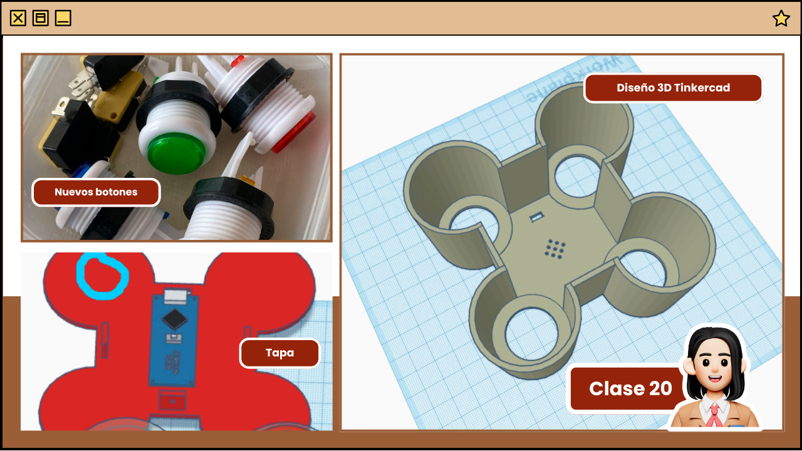
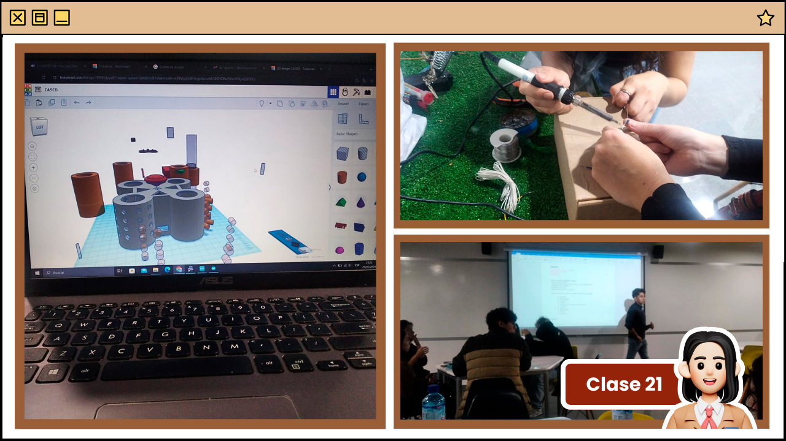
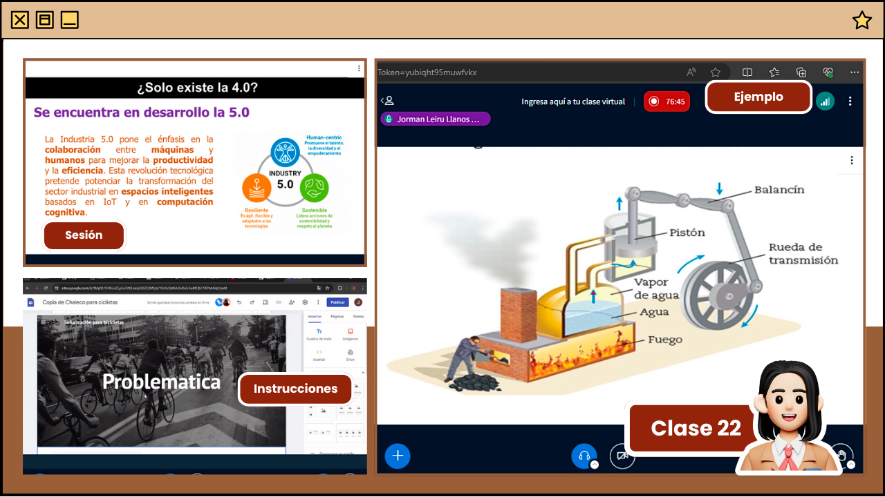
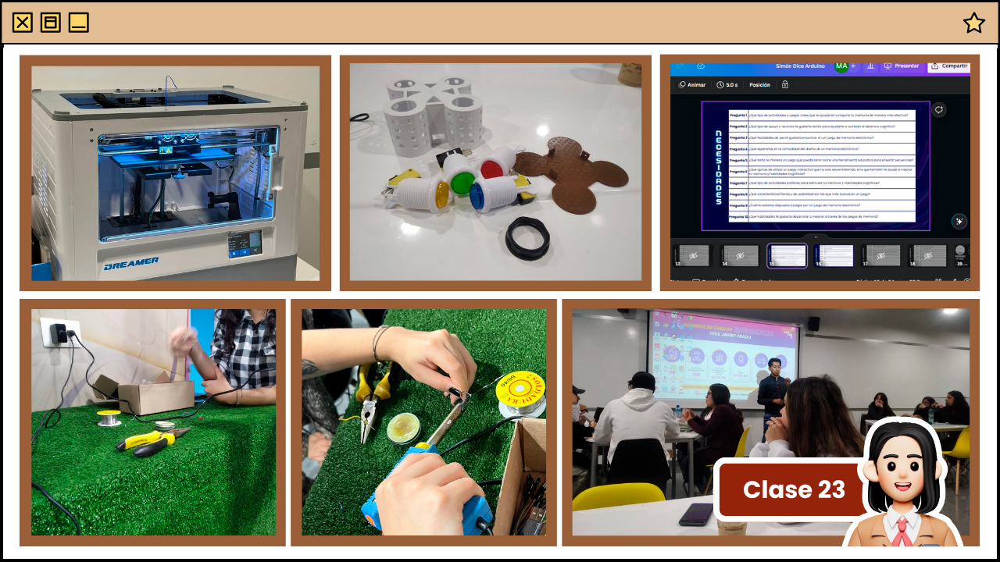
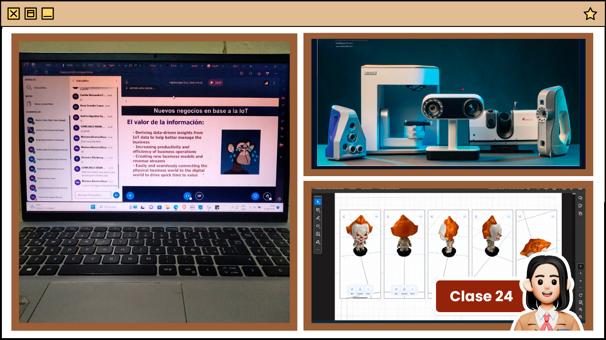
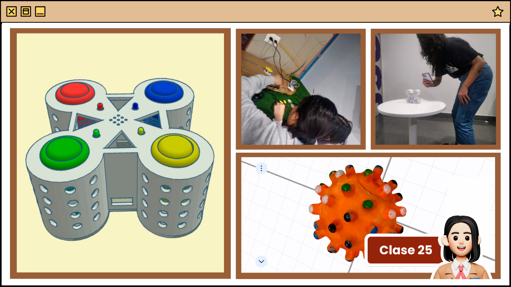
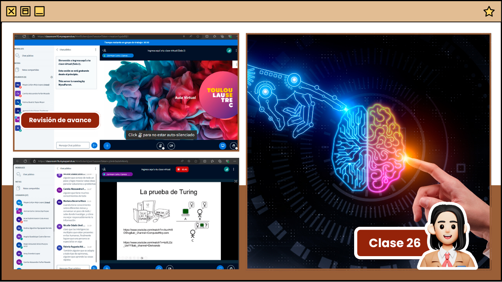
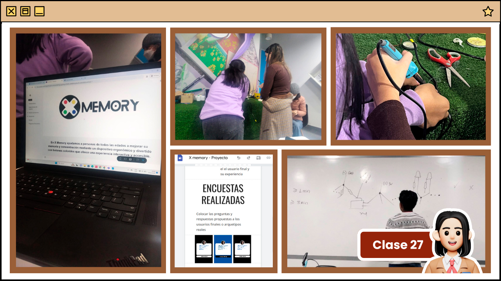
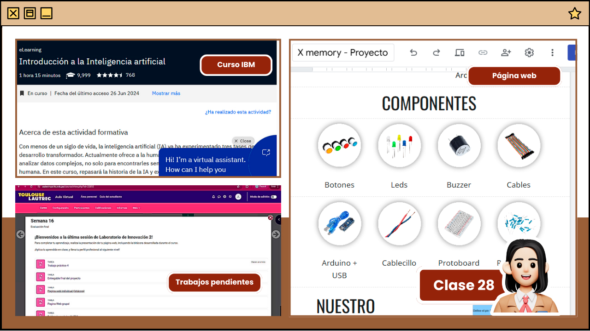
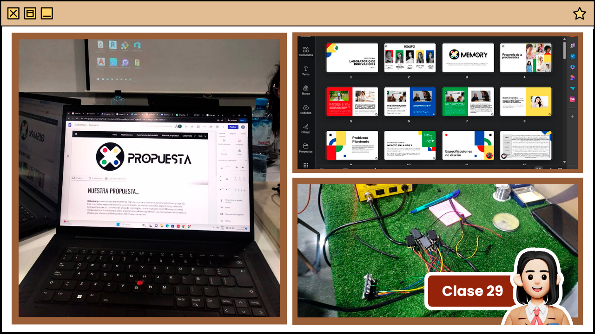

Descripción de clase
En la sesión 20, nos dedicamos a corregir el diseño 3D de nuestro proyecto. Tuvimos que rediseñar el prototipo debido a un cambio en uno de los componentes, lo que resultó en un diseño muy distinto al propuesto anteriormente. Durante el avance, el profesor ingresó a nuestras salas de trabajo, nos preguntó sobre la distribución de los materiales y nos dio recomendaciones para mejorarlo.
Luego, el profesor nos pidió descargar el programa "Flash Print" para conocer el tiempo de impresión. Inicialmente, estimamos 6 horas de impresión. El profesor nos sugirió hacer cambios al diseño, como agregar más huecos y reducir el grosor y la altura para disminuir el tiempo de impresión. A pesar de estos ajustes, el tiempo de impresión seguía siendo alto. La sesión terminó con la decisión de continuar con el diseño en la próxima clase.

Descripción de clase
En la sesión 21, el profesor nos asignó varias actividades que deberemos entregar como grupos en base a nuestro proyecto. Estas actividades incluyen el Lean Canvas, buyer persona, análisis de rendimiento, página web, videos, etc. En grupo, coordinamos cómo ejecutar estas tareas durante los próximos días para optimizar el tiempo y tenerlas listas con anticipación.
Luego, el profesor solicitó que nos dividiéramos en roles para continuar con la ejecución del proyecto. En esta clase, nos enfocamos en soldar los componentes y finalizar el diseño 3D de nuestro proyecto. Tres compañeras se encargaron de soldar los componentes, mientras que las demás trabajaron en el diseño en Tinkercad. Hubo algunos contratiempos durante el proceso de soldadura, pero con la colaboración de todas logramos solucionarlos.
Al final de la sesión, importamos nuevamente el proyecto de Tinkercad a Flash Print para conocer el nuevo tiempo de impresión. Tras realizar los cambios necesarios, el tiempo de impresión se redujo a 5 horas, lo cual el profesor confirmó como adecuado. Así, el prototipo quedó listo para la impresión.

Descripción de clase
En la sesión 22, el profesor primero dio indicaciones sobre los trabajos finales a entregar en grupo. Nos explicó cómo editar y modificar la plantilla de Google Sites para nuestra infografía. Nos indicó los puntos a incluir: problemática, usuario, desarrollo (descripción del proyecto, diagrama de flujo, diseño 3D), historia del proyecto, equipo (nombres, correos, carreras) y preguntas adicionales (Q&A).
Luego, hablamos sobre el Internet de las Cosas (IoT), destacando su importancia y ejemplos prácticos como los autos eléctricos Tesla y las casas inteligentes (smarthouses). Explicó que IoT es una red de objetos conectados con sensores y software que permite la comunicación fluida entre personas, procesos y cosas. Mencionó aplicaciones como refrigeradores inteligentes que pueden monitorear y reportar el estado de los alimentos.
El profesor también introdujo la Industria 4.0, que incluye tecnologías como IoT, análisis de datos, cloud computing, inteligencia artificial y aprendizaje automático. Hablamos de la evolución industrial desde la primera revolución industrial hasta la actual cuarta revolución, y cómo la industria 5.0 se centrará en la colaboración entre máquinas y humanos para mejorar la productividad y la eficiencia, con un enfoque humanocéntrico, sostenible y resiliente.
Finalmente, discutimos los usos comunes de IoT, como la manufactura inteligente, mantenimiento predictivo, redes eléctricas inteligentes, ciudades inteligentes, logística conectada y cadenas de suministro digitales inteligentes.

Descripción de clase
En la sesión 23, el profesor volvió a explicar el proceso de soldaje, ya que todos los grupos aún necesitaban realizarlo. También nos entregó nuestros proyectos impresos en 3D, lo cual fue muy emocionante, ya que pudimos ver cómo nuestras ideas digitales se materializaban físicamente.
Luego, nos dividimos en duplas para abordar diferentes tareas. Algunas compañeras se encargaron de finalizar las preguntas sobre necesidades y frustraciones, que nos ayudarán a definir nuestro arquetipo y el público objetivo del proyecto. Otras compañeras se centraron en ajustar los detalles del prototipo 3D, limar agujeros para los botones que estaban muy estrechos. Mientras tanto, otra compañera intentaba soldar los cables y unirlos con los LEDs. Sin embargo, tuvimos dificultades, ya que los cables no se unían correctamente. El profesor nos ayudó proporcionándonos un cable adecuado para el soldaje, pero como esto ocurrió casi al final de la clase, no pudimos completar la actividad. Coordinamos para reunirnos el fin de semana para comprar componentes adicionales y avanzar en el ensamblaje final del proyecto.

Descripción de clase
En la sesión 24, se abordó sobre las especificaciones del diseño y la elaboración de la infografía del proyecto. El profesor explicó cómo organizar la información para posteriormente continuar reiterando los usos comunes de la IoT.
Hablamos de proyectos en Moquegua, Arequipa y Puno que usan energía solar para iluminar hogares y escuelas. Mencionó las máquinas Fronius para convertir energía solar en electricidad, dentro del concepto de Smart Power Grids, y discutimos cómo convertir ciudades en Smart Cities.
Se introdujeron técnicas de digitalización y escaneo 3D, como la fotogrametría digital, que consiste en tomar varias fotos desde diferentes ángulos para generar un modelo 3D; el escaneo 3D mediante triangulación láser, que proyecta una línea láser sobre el objeto y registra las deformaciones para crear una imagen tridimensional; y la transformación por reflectancia, que usa diferentes ángulos de luz para capturar detalles en 2D sobre relieves y texturas.
Para la próxima clase, se nos pidió traer pequeños objetos para escanear usando aplicaciones como WIDAR 3D y KIRI Engine App. También se mencionaron dispositivos de escaneo 3D profesionales como Artec Micro y Artec Space Spider, destacando su uso en salud, CGI y conservación del patrimonio.

Descripción de clase
En la sesión 25, antes de iniciar la clase, el profesor revisó los objetos que habíamos traído para escanear con las aplicaciones mencionadas la clase anterior. Luego explicó las actividades de la sesión: terminar de ensamblar el prototipo y escanear cinco objetos.
Para optimizar el trabajo, nos dividimos en dos grupos: unas compañeras se encargaron del ensamblaje, mientras las demás nos dedicamos al escaneo de los objetos. Nos trasladamos a otro salón para trabajar sin interrupciones y aprovechar los materiales disponibles de aquel ambiente.
Durante el escaneo, tuvimos problemas con las aplicaciones: algunas se cerraban solas, y la App Kiri no procesaba las fotos. Sin embargo, una aplicación logró resultados aceptables en las partes delanteras, superiores e inferiores de los objetos. El profesor revisó nuestro trabajo y consideró que estaba muy bien.
Mientras tanto, continuamos con el ensamblaje del prototipo bajo las indicaciones del profesor. También avanzamos con la elaboración de la infografía del proyecto y la exportarción del renderizado 3D para pegarlo como imagen dentro de la infografía y página web. Así concluyó la clase.

Descripción de clase
En la sesión 26, el profesor abordó el tema de la inteligencia artificial (IA), explicando su presencia en aplicaciones cotidianas como videos, búsquedas y edición de imágenes. Aunque se han desarrollado algoritmos sofisticados y se ha avanzado en la bioimitación y visión por ordenador, replicar funciones biológicas como la visión y el movimiento sigue siendo un desafío. Además, se exploraron las implicaciones éticas y morales de la IA, destacando la necesidad de reglas formales y el razonamiento probabilístico.
Se revisaron las bases de la IA desde una perspectiva filosófica, matemática y psicológica, y se definieron los sistemas de IA en función de su capacidad para actuar y pensar como humanos, así como para razonar y actuar racionalmente. Se discutió el misterio de la conciencia y el repasó la historia de la IA.
Finalmente, se abordaron los diferentes tipos de razonamiento utilizados en IA, incluyendo la satisfacción de restricciones, la búsqueda heurística, el razonamiento basado en modelos, la planificación de tareas y el razonamiento con incertidumbre. Se subrayó la importancia de estos razonamientos en aplicaciones prácticas y en la toma de decisiones empresariales, mostrando cómo la IA ha evolucionado y se ha integrado en diversos campos para mejorar la eficiencia y la toma de decisiones.

Descripción de clase
En la sesión 27 nos enfocamos en dos frentes principales: el ensamblaje físico y el desarrollo digital de nuestro proyecto. Dividimos el equipo para maximizar la eficiencia: mientras algunas miembros se ocuparon de soldar los componentes del prototipo, otras trabajamos en la creación de la página web. Para esta última tarea, utilizamos plantillas en Canva para diseñar el branding de la marca del proyecto y estructurar la web con elementos como objetivos, misión, visión, público objetivo, y detalles del proceso de elaboración del juego, incluyendo gráficos de conexiones y diagramas de flujo. El objetivo fue no solo mejorar la estética de la página, sino también hacerla más atractiva y funcional para los usuarios, asegurando una experiencia de usuario óptima.
Durante el proceso de ensamblaje, enfrentamos algunos desafíos técnicos con la adhesión de componentes, pero gracias a la asistencia del profesor, pudimos resolverlos adecuadamente. Al final de la sesión, el profesor proporcionó orientación sobre las conexiones necesarias para integrar el prototipo con Arduino, y documentamos este proceso en vídeo para facilitar el trabajo colaborativo del equipo en los días siguientes.

Descripción de clase
En la sesión 28, no tuvimos una clase como de costumbre. Fue una clase para avanzar pendientes, ll profesor nos recordó los trabajos individuales y grupales que debemos entregar durante la semana. Además, compartió un enlace para realizar un curso de IBM sobre inteligencia artificial, que ofrece una certificación y conocimiento adicional. Después de estos anuncios, nos dividió en salas para responder consultas del proyecto, ya que estamos en la fase de finalización.
En las salas, nos dividimos junto a mi equipo los puntos pendientes y aprovechamos la hora otorgada por el profesor para avanzar con más del 80% del contenido. Solo quedaron pendientes algunos puntos como los dibujos de mano alzada y continuar con el ensamblaje. Por lo demás, el proyecto está casi listo, faltando solo probar las conexiones y afinar detalles de la presentación. Además, el profesor nos pidió estudiar para la sustentación, similar a una tesis, y nos compartirá un cuestionario con preguntas para prepararnos.

Descripción de clase
En la sesión 29, continuamos avanzando con el proyecto, centrándonos en la soldadura y la realización de la presentación. Nos dividimos nuevamente: dos personas se encargaron de la página web, otra de la presentación en Canva, y otras dos del ensamblaje. Al probar el circuito del juego y realizar un test, surgió un desperfecto que requirió volver a soldar algunas partes. Sin embargo, el tiempo no fue suficiente ya que la clase estaba por terminar, así que decidimos regresar a Toulouse para solucionarlo junto al profesor y dejar listo nuestro producto. Además, aprovecharemos ese mismo día para grabar nuestro spot publicitario. Es así como culmina nuestra última clase presencial esperando dar lo mejor en la presentación final del X Memory.